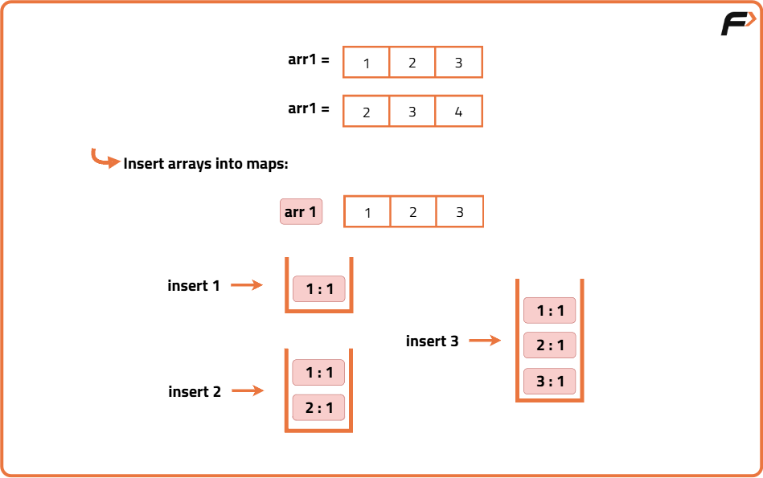
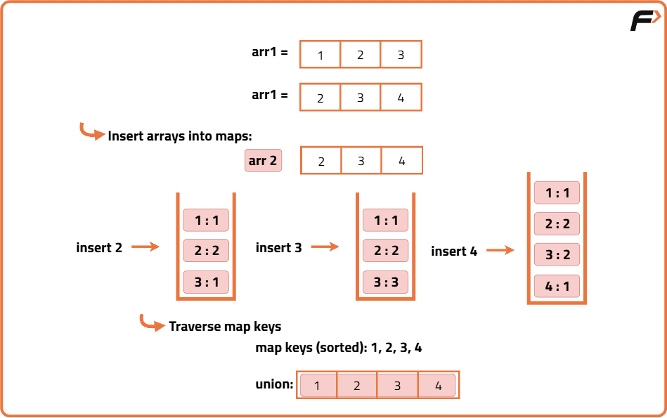
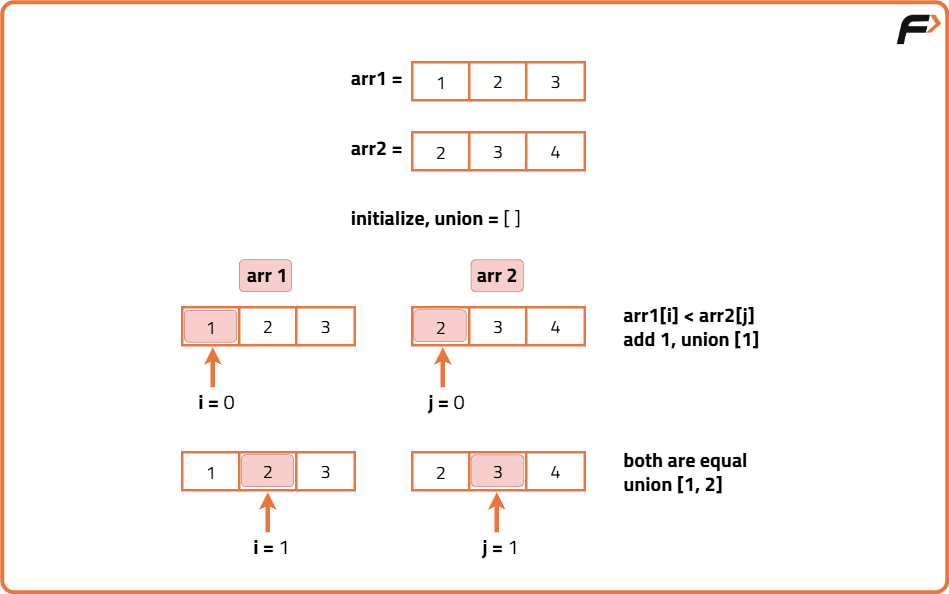
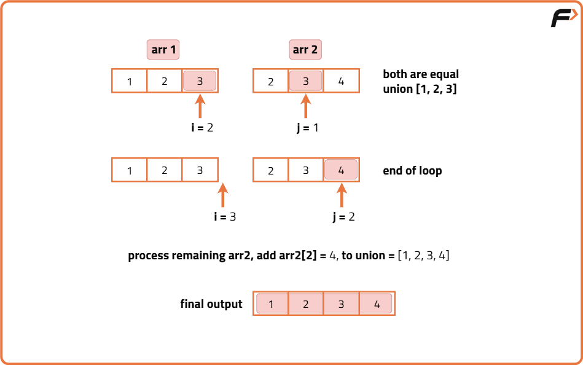

Union of Two Sorted Arrays
Problem Statement: Given two sorted arrays, arr1, and arr2 of size n and m. Find the union of two sorted arrays.
The union of two arrays can be defined as the common and distinct elements in the two arrays.
NOTE: Elements in the union should be in ascending order.
Examples
Input:n = 5,m = 5 arr1[] = {1,2,3,4,5} arr2[] = {2,3,4,4,5} Output: {1,2,3,4,5} Explanation: Common Elements in arr1 and arr2 are: 2,3,4,5 Distnict Elements in arr1 are : 1 Distnict Elemennts in arr2 are : No distinct elements. Union of arr1 and arr2 is {1,2,3,4,5}
Input:n = 10,m = 7,arr1[] = {1,2,3,4,5,6,7,8,9,10}arr2[] = {2,3,4,4,5,11,12} Output: {1,2,3,4,5,6,7,8,9,10,11,12} Explanation: Common Elements in arr1 and arr2 are: 2,3,4,5 Distnict Elements in arr1 are : 1,6,7,8,9,10 Distnict Elemennts in arr2 are : 11,12 Union of arr1 and arr2 is {1,2,3,4,5,6,7,8,9,10,11,12}
Disclaimer: Don’t jump directly to the solution, try it out yourself first.
Approach 1- Using Map
Algorithm
As we are using only a single map the common element in arr1 and arr2 are treated as a single element for finding frequency, so there would be no duplicates.
Why not unordered_map?
In unordered_map the keys are stored in random order, while in the map the keys are stored in sorted order (ascending order by default). As we require elements of the union to be in ascending order, using a map is preferable.
We can also use unordered_map, but after finding the union of arr1 and arr2, we need to sort the union vector to get the elements of the union in sorted order.
- Initialize an empty map named freq to store element frequencies
- Initialize an empty vector named Union to store unique elements
- Loop through the first array arr1:
- For each element, increment its count in freq
- Loop through the second array arr2:
- For each element, increment its count in freq
- Iterate over each key-value pair in freq (keys will be sorted because map is ordered):
- Push the key (element) into the Union vector


Code
#include <bits/stdc++.h>
using namespace std;
// Define the Solution class
class Solution {
public:
// Function to find union of two arrays
vector<int> FindUnion(int arr1[], int arr2[], int n, int m) {
// Create a map to store frequency of each element
map<int, int> freq;
// Create a vector to store the union result
vector<int> Union;
// Loop through first array and store frequency
for (int i = 0; i < n; i++)
freq[arr1[i]]++;
// Loop through second array and store frequency
for (int i = 0; i < m; i++)
freq[arr2[i]]++;
// Traverse the map to get unique sorted elements
for (auto &it : freq)
Union.push_back(it.first);
// Return the union vector
return Union;
}
};
int main() {
// Define size of first array
int n = 10;
// Define size of second array
int m = 7;
// Initialize first array
int arr1[] = {1, 2, 3, 4, 5, 6, 7, 8, 9, 10};
// Initialize second array
int arr2[] = {2, 3, 4, 4, 5, 11, 12};
// Create object of Solution class
Solution obj;
// Call FindUnion function
vector<int> Union = obj.FindUnion(arr1, arr2, n, m);
// Print output message
cout << "Union of arr1 and arr2 is " << endl;
// Print all elements of union
for (auto &val : Union)
cout << val << " ";
// Return success
return 0;
}
Complexity Analysis
Time Compleixty : O( (m+n)log(m+n) ) . Inserting a key in map takes logN times, where N is no of elements in map. At max map can store m+n elements {when there are no common elements and elements in arr,arr2 are distntict}. So Inserting m+n th element takes log(m+n) time. Upon approximation across insertion of all elements in worst it would take O((m+n)log(m+n) time.
Using HashMap also takes the same time, On average insertion in unordered_map takes O(1) time but sorting the union vector takes O((m+n)log(m+n)) time. Because at max union vector can have m+n elements.
Space Complexity : O(m+n) {If Space of Union ArrayList is considered} ,O(1) {If Space of union ArrayList is not considered}
Approach 2- Using Set
Algorithm
- Initialize an empty set.
- Insert all elements from the first array into set.
- Insert all elements from the second array into set.
- Convert the set into a list/array to get the result.
- If required in sorted order, sort the list before returning.
- Return/print the union result.
In unordered_set the elements are stored in random order, while in a set the keys are stored in sorted order (ascending order by default). As we require elements of the union to be in ascending order, using a set is preferable.
We can also use unordered_set, but after finding the union of arr1 and arr2, we need to sort the union vector to get the elements of the union in sorted order.
Code
#include <bits/stdc++.h>
using namespace std;
class Solution {
public:
// Function to find the union of two arrays using set
vector<int> findUnion(int arr1[], int arr2[], int n, int m) {
// Create a set to store unique elements
set<int> st;
// Insert elements from first array
for (int i = 0; i < n; i++) {
st.insert(arr1[i]);
}
// Insert elements from second array
for (int i = 0; i < m; i++) {
st.insert(arr2[i]);
}
// Convert set to vector
vector<int> unionArr(st.begin(), st.end());
return unionArr;
}
};
int main() {
int arr1[] = {1, 2, 3, 4, 5, 6, 7, 8, 9, 10};
int arr2[] = {2, 3, 4, 4, 5, 11, 12};
int n = 10, m = 7;
Solution obj;
vector<int> result = obj.findUnion(arr1, arr2, n, m);
cout << "Union of arr1 and arr2 is: ";
for (int val : result) {
cout << val << " ";
}
return 0;
}
Complexity Analysis
Time Compleixty : O( (m+n)log(m+n) ) . Inserting an element in a set takes logN time, where N is no of elements in the set. At max set can store m+n elements {when there are no common elements and elements in arr,arr2 are distntict}. So Inserting m+n th element takes log(m+n) time. Upon approximation across inserting all elements in worst, it would take O((m+n)log(m+n) time.
Using HashSet also takes the same time, On average insertion in unordered_set takes O(1) time but sorting the union vector takes O((m+n)log(m+n)) time. Because at max union vector can have m+n elements.
Space Complexity : O(m+n) {If Space of Union ArrayList is considered} ,O(1) {If Space of union ArrayList is not considered}
Optimal Approach - Two Pointers
Algorithm
- Initialize two pointers at the start of both arrays.
- While neither pointer has reached the end:
- If element pointed by first pointer is smaller, add it to result if not duplicate, move first pointer.
- If element pointed by second pointer is smaller, add it to result if not duplicate, move second pointer.
- If both elements are equal, add one to result if not duplicate, move both pointers.
- After exiting loop, append remaining elements from either array, skipping duplicates.
- Return the result array containing the union.


Code
#include <bits/stdc++.h>
using namespace std;
class Solution {
public:
// Function to find union of two sorted arrays using two pointers
vector<int> findUnion(int arr1[], int arr2[], int n, int m) {
// Vector to store union elements
vector<int> Union;
// Initialize two pointers for both arrays
int i = 0, j = 0;
// Loop until either pointer reaches the end
while (i < n && j < m) {
// If current element in arr1 is smaller
if (arr1[i] < arr2[j]) {
// Add element if union empty or different from last added
if (Union.empty() || Union.back() != arr1[i])
Union.push_back(arr1[i]);
i++; // Move pointer in arr1
}
// If current element in arr2 is smaller
else if (arr2[j] < arr1[i]) {
// Add element if union empty or different from last added
if (Union.empty() || Union.back() != arr2[j])
Union.push_back(arr2[j]);
j++; // Move pointer in arr2
}
else {
// Elements are equal, add once if not duplicate
if (Union.empty() || Union.back() != arr1[i])
Union.push_back(arr1[i]);
i++; j++; // Move both pointers
}
}
// Append remaining elements from arr1
while (i < n) {
if (Union.empty() || Union.back() != arr1[i])
Union.push_back(arr1[i]);
i++;
}
// Append remaining elements from arr2
while (j < m) {
if (Union.empty() || Union.back() != arr2[j])
Union.push_back(arr2[j]);
j++;
}
// Return the final union vector
return Union;
}
};
int main() {
int arr1[] = {1, 2, 3, 4, 5, 6, 7, 8, 9, 10};
int arr2[] = {2, 3, 4, 4, 5, 11, 12};
int n = 10, m = 7;
Solution obj;
vector<int> result = obj.findUnion(arr1, arr2, n, m);
cout << "Union of arr1 and arr2 is: ";
for (int val : result) cout << val << " ";
return 0;
}
Complexity Analysis
Time Complexity: O(m+n), Because at max i runs for n times and j runs for m times. When there are no common elements in arr1 and arr2 and all elements in arr1, arr2 are distinct.
Space Complexity : O(m+n) {If Space of Union ArrayList is considered} O(1) {If Space of union ArrayList is not considered}